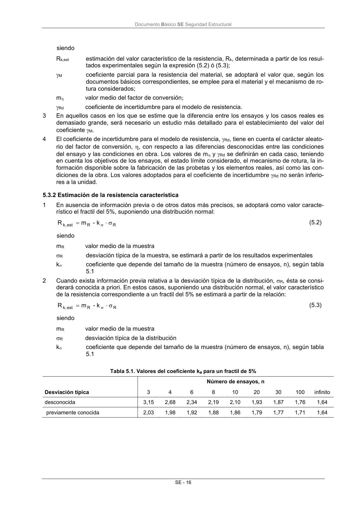

DB-SE Seguridad estructural · edición 2019-12-20 · capa oficial
Documento DB-SE-oficial · SHA-256 del PDF ec1fbfc51b28c4d62667aec480585b76fe31727ccf1615015a5d2d2677763f8f
Copia fiel del PDF fuente · Fuente oficial
Ficha de la disposición en la fuente oficial
Formatos: JSON del segmento · Markdown
5.3.2 Estimación de la resistencia característica 1 En ausencia de información previa o de otros datos más precisos, se adoptará como valor caracte- rístico el fractil del 5%, suponiendo una distribución normal: R R est , k k - m R (5.2) siendo mR valor medio de la muestra R desviación típica de la muestra, se estimará a partir de los resultados experimentales k coeficiente que depende del tamaño de la muestra (número de ensayos, n), según tabla 5.1 2 Cuando exista información previa relativa a la desviación típica de la distribución, R, ésta se consi- derará conocida a priori. En estos casos, suponiendo una distribución normal, el valor característico de la resistencia correspondiente a un fractil del 5% se estimará a partir de la relación: R R est k, k - m R (5.3) siendo mR valor medio de la muestra R desviación típica de la distribución k coeficiente que depende del tamaño de la muestra (número de ensayos, n), según tabla 5.1 Tabla 5.1. Valores del coeficiente k para un fractil de 5% Número de ensayos, n Desviación típica 3 4 6 8 10 20 30 100 infinito desconocida 3,15 2,68 2,34 2,19 2,10 1,93 1,87 1,76 1,64 previamente conocida 2,03 1,98 1,92 1,88 1,86 1,79 1,77 1,71 1,64 Documento Básico SE Seguridad Estructural SE - 17
